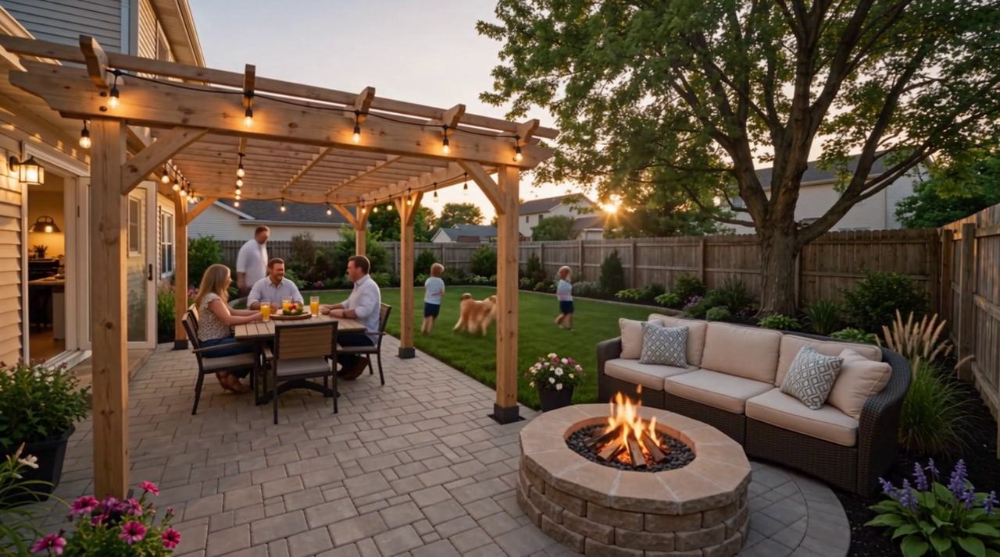
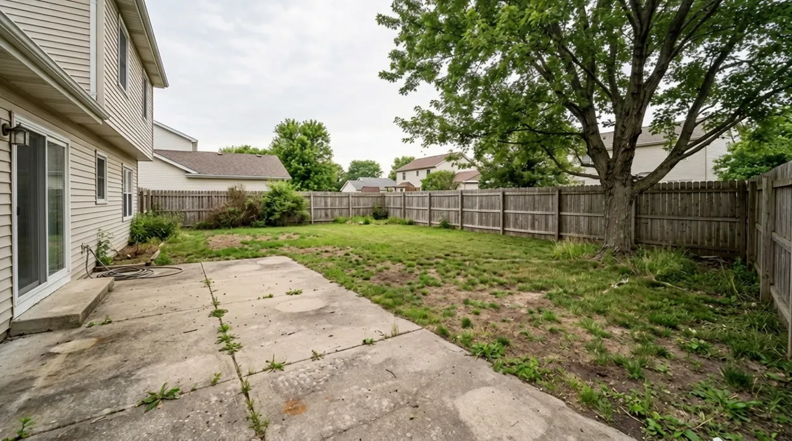
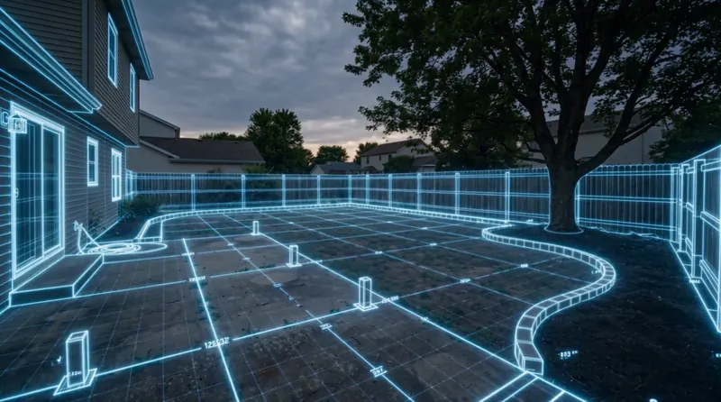
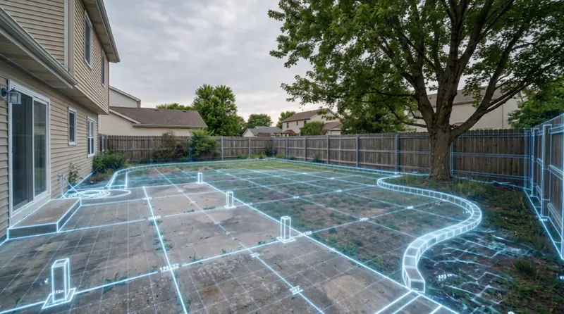
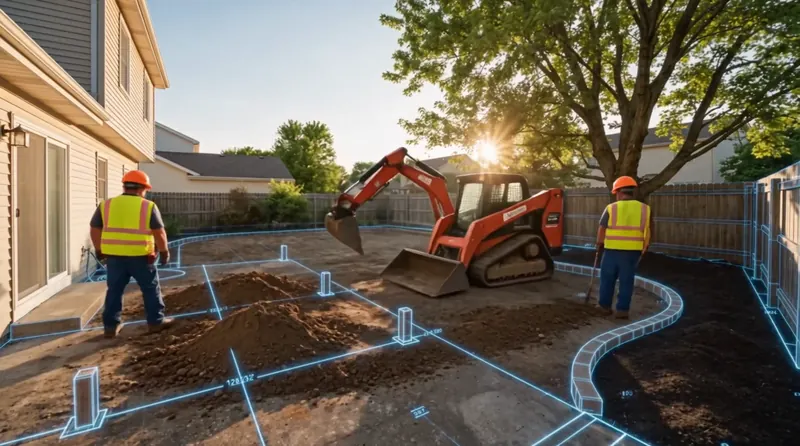
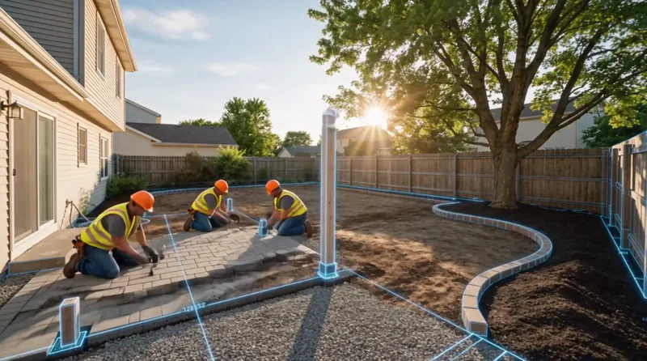
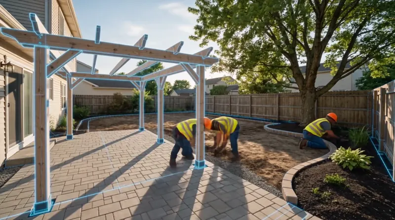
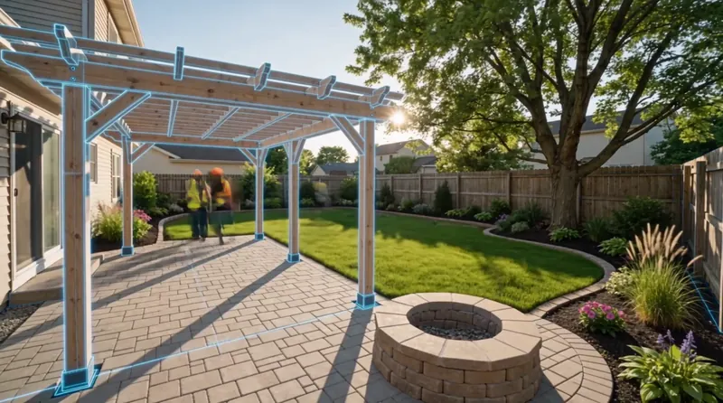
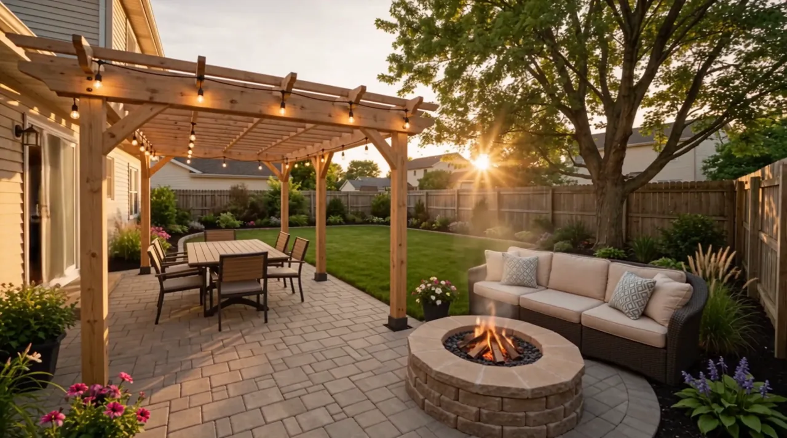
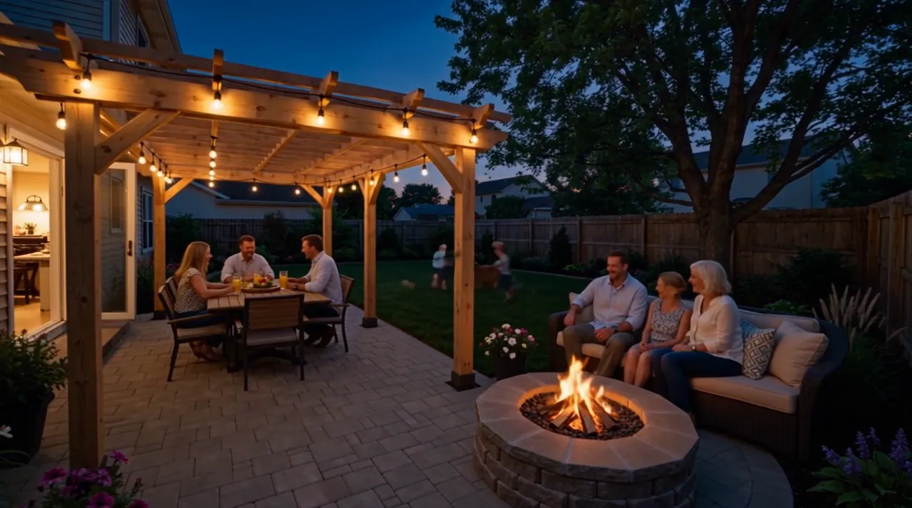

The floor
Hardscape
Patios, paths, steps, walls and edging. Sized for what happens on them, set on a base built for drainage, and pitched so water leaves.

Backyard transformations · McLean, VA
We bring landscape, hardscape and outdoor-living elements together around one question: how do you want to use the space?
01 Problem
A slab by the back door, a lawn nobody walks on, a fence, a tree. It’s space — but it isn’t a place. Before changing anything, it helps to name what’s actually stopping you from using it.

Frame 00:00 of the transformation film
02–03 Vision & plan
The most expensive backyard mistakes are invisible on day one: water that runs toward the house, a patio too small for the table, a path that goes the wrong way. A plan decides what must be solved first — then what the space is for.
Dining, gathering, a quiet corner, somewhere for the kids. The uses set the size and shape of everything else.
Grading, drainage, soil, access for equipment, buried utilities, tree roots. Problems here don’t go away under new pavers.
From the door to the table, the table to the fire, the patio to the lawn — paths that follow how people actually walk.
Shade, planting that softens hard edges, light for the evening, and materials that suit the house.

Frame 00:02 The design stage in the film: the new layout drawn over the yard as it is — the same fence, the same tree, the same door. Good plans start from what’s already there.
03 Design
A patio on its own is a floor. What makes a backyard usable is how the floor, the structure, the planting and the light work together.
Hardscape
Patios, paths, steps, walls and edging. Sized for what happens on them, set on a base built for drainage, and pitched so water leaves.
Structure
A pergola or shade structure turns a paved area into a room — somewhere with shade in July and a frame for lights in October.
Living landscape
Beds along the fence, lawn where there’s a use for it, planting that softens hard edges, adds privacy and makes the space feel settled.
Light & fire
String lights, path lights, a fire feature. The difference between a yard you use until dinner and one you use after it.
04 Build
Order matters. Each stage sets up the next, and most of the work that decides whether a backyard lasts happens before anything pretty goes in.

Step 1
The plan is marked on site before any digging, so sizes, sightlines and paths can be checked in real space — and adjusted while that’s still cheap.
Worth asking Can we walk the layout together before work starts?

Step 2
Old surfaces come out, utilities are marked, soil is excavated and graded so water drains away from the house. This is where most drainage problems are won or lost.
Worth asking Where will the water go after a heavy storm?

Step 3
A compacted aggregate base, then pavers or stone, edge restraints and curved bed borders. Conduit sleeves for future lighting or power go under the paving now.
Worth asking How deep is the base, and how is it compacted?

Step 4
Pergola posts are set on proper footings; beds are prepared and planted. The space starts to read as rooms instead of a construction site.
Worth asking Does this structure need a permit or inspection?

Step 5
Lawn, fire feature, lighting, final planting and furniture placement — checked against the uses the plan started with.
Worth asking What does the first year of care look like?
05 Transformation
Nothing about the lot changed — only what it was designed to do. Drag to compare.

06 Lived in
A dining area sized for the table and the chairs pulled back from it, close enough to the kitchen door that carrying plates out is easy.
A fire feature with seating around it gives people a reason to stay after the meal — and a place for conversation that isn’t the kitchen.
Shade overhead, planting on the edges and a comfortable seat facing something worth looking at.
Lawn kept where it has a job — open, level, visible from the patio so adults can sit while kids run.
Low, warm light on the places people sit and walk, so the yard doesn’t shut off at sunset.
Paths that connect door, table, fire and lawn the way people actually walk — no trampled shortcuts.
— Local
A few conditions come up often around McLean and wider Fairfax County. None of them are reasons not to build — they’re reasons to plan first.
Soil & water
Northern Virginia soils are frequently clay-rich, and Fairfax County maps certain soils as problem soils. Slow-draining ground makes grading, base depth and drainage details matter more. The county’s soil maps are a useful first check for your lot.
Mature trees
Many McLean lots have large, established trees. Their feeder roots run shallow and wide, so paving, trenching and equipment routes near them need to be planned — sometimes with raised or permeable approaches.
Permits
McLean is unincorporated Fairfax County. Structures, some retaining walls, electrical circuits and gas lines may need permits or inspections through Fairfax County Land Development Services. Confirm scope before building.
Before digging
Virginia law requires utility lines to be marked through Virginia 811 before excavation. Lines for gas, power and communications often run through backyards.
Streams & buffers
Lots near streams can fall within Resource Protection Areas under Fairfax County’s Chesapeake Bay Preservation Ordinance, which limits clearing, grading and new impervious surfaces.
Seasons
Hot, humid summers make shade and evening use valuable. Winter freeze–thaw cycles make a well-drained, well-compacted base essential for anything paved.
Local rules change and depend on the property. Treat these notes as starting points to confirm with Fairfax County and, where relevant, your HOA.
— Questions
There’s no honest single number. Cost follows size, site access, how much grading and drainage work is needed, what has to be removed, the materials chosen, structures, utilities like electrical or gas, and how much planting is included. A site visit and a defined scope are what make a real estimate possible — and a phased plan can spread it out.
It depends on what’s being built. Structures such as pergolas, some retaining walls, electrical circuits and gas lines can require Fairfax County permits or inspections; patios and planting often don’t. Confirm the specific scope with Fairfax County Land Development Services, and check any HOA covenants.
It should usually be fixed first. Regrading so water moves away from the house, and designing the patio base and slopes with drainage in mind, is far easier before new surfaces go down than after.
Often, yes — with care. Most of a tree’s feeder roots sit in the top foot or two of soil and spread well beyond the canopy. Excavation, heavy equipment and new paving in that zone can harm the tree, so the layout and base methods should be chosen with it in mind.
Yes. A common order is ground and hardscape first, structure and lighting second, planting and finishing last. Design the whole plan up front so early phases don’t block later ones — for example, by laying conduit sleeves under the patio before it’s paved.
It varies with scope, permits, weather and material lead times. A planting refresh is very different from a regrade, new terrace and pergola. A defined scope comes with a schedule; be wary of any timeline given before someone has seen the site.
A conversation about how you want to use the space, then a look at the site itself — access, grading, drainage, trees and existing surfaces. From there, a plan and scope you can react to before anything is built.

01 → 06 Your turn
Tell us a little about the yard you have and how you’d like to use it. The first step is a conversation, not a sales pitch.